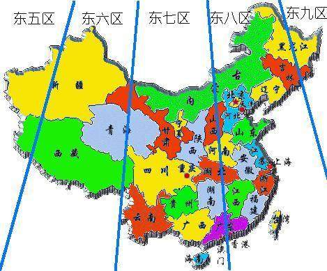

很多人在找命理师批八字的时候，命理师在收集客户信息的时候，应该包含两大信息，一：你的出生年月日时；二：你的出生地，一般提供到市就好， 不用到县或者更具体的家庭住址。
算命需要把阳历或者阴历的出生时间，换算成用天干和地支组合的表达形式，大家可能不知道怎么个表达法，但都认可，不去深究，而需要提供出生地又是这么回事？这就涉及到真太阳时，也是今天讲的重点，下面一一道来。 1853年8月12日，美国东部罗德岛州，两辆火车迎头相撞，14人因此死亡。事故的原因在今天看来难以置信——两车列车长的手表差了2分钟。 那时，工业革命进展迅速，但时间测量还沿用中世纪的方法：以日晷等测量的太阳时作地方标准。 在此之前，类似原因的刮蹭已发生多次，但并不引起大家的重视；导致火车相撞事故的重要原因：各地的时间标准不同。 所以在同一国家或者地区，把时间统一势在必行；
1958年7月31日，苏共中央第一书记赫鲁晓夫访问中国，提出在中国建立长波导航授时电台与联合舰队的建议，就是由苏联为中国授时，中国只需要在国内建一个接受的站点就好； 遭到毛泽东婉言拒绝，因为国家的授时自主掌握与否关乎国家的国防安全与主权。 1964年中国第一颗原子弹爆炸，使最高决策层更加意识到，高精度的时间在未来尖端科技领域具有的决定性的作用。 1968年10月，中国科学院国家授时中心建成，在陕西西安临潼区蒲城县城西； 因为西安临潼在中国地理位置上处在中国的正中心，在发射授时信号时可以同时同步到达周边省市，覆盖全国，而且深处内陆地区，地质结构稳定，受地震等自然灾害的机会更小。 1970年12月15日，授时中心开始向全国进行短波广播。半径达3000公里的范围内，人们第一次从收音机里听到日后耳熟能详的"……嘀"，现在是北京时间×点整。 现在统一使用的北京时间，就是上面说到西安临潼当地此时的时间，而名字取为北京时间而已，而不是北京当地的时间。 这就像08年奥运会上，林妙可“唱”的《歌唱祖国》，其实是对嘴的，而原声在唱的是杨沛宜，因为杨沛宜当时在换牙，形象上没有林妙可好，所以被顶替了。 统一时间对国家主权和国家安全，经济发展，人文交流都很重要，但是算命先生算命时，并不能按照北京时间算。
中国幅员辽阔，横跨五个时区，而不同时区之间，其时间是不一样的，太阳从东方出来，所以东部沿海地区比内陆地区天亮得早，新疆的人就说他们的时间是晚于北京，表示中国各地存在着时差。 所以命理师在算命的时候需要把客户提供的北京时间，根据出生地，减去时差，换算成“真太阳时”，原因如下。 “太阳时”是一个名词，包括“真太阳时”和“平太阳时”；是指以太阳照射的某一角度确定时间，一般太阳在地球的正上方为正午，定为12点，以此推导往前往后的具体时间。 “太阳时”地理书中说地球围绕太阳转，形成的是一个椭圆的轨道，所以太阳和地球的距离在不同的时间在不断改变； 人类各国家为了统一时间，就假设这个轨道是圆形的，这样利于平分360度，一圆周除以24等于15度，在地球仪上均等的划分24格(即为24个时区)，每个为15度，代表一个小时，当世界各地因为这个圆形轨道确定的时间，就称为“平太阳时”，为平均的时间； 而通过正确的椭圆形轨道确定的时间，指的就是“真太阳时”，为真实的时间；
太阳为纯阳星体（月亮为纯阴），他们具有的能量在我们生活中发挥很大影响。比如正午午时出生的，其身上具有的“阳气”就会多一些，在晚上出生“阴气”则盛，像一个太极图一样此消彼长。 我们出生的时间，在得到太阳和月亮照射作用的多少，决定自身蕴含的五行配置和阴阳属性，就相当于人的基因一样。 算命是是通过出生时间，按照一定规律用天干地支排出先天八字和后天大运，根据他们具有的阴阳五行属性，之间的生克制化，彼此发生刑冲克害等关系，便可进行命理测算，推导吉凶祸福信息，来分辨命理需要补助或者忌讳什么五行。 所以批八字的时候，应该用真太阳时，为了知道真太阳时，就需要知道命主出生的地方。只有把时间弄对了，排出来的八字，才是正确的，批命也会更加准确。
【总结】 一，国家统一时间，自主授时是基于国家主权和安全，经济发展，和人文交际等角度考虑的。 二，命理师在批八字的时候，应该以询问其出生地，把当时出生的北京时间换算成真太阳时。 三，而八字中使用的时辰，是指两个小时，所以你在提供时间的时候，在不知道具体分钟的时候，可以提供一个区间，老师便可推导出真太阳时。 祝福好运。